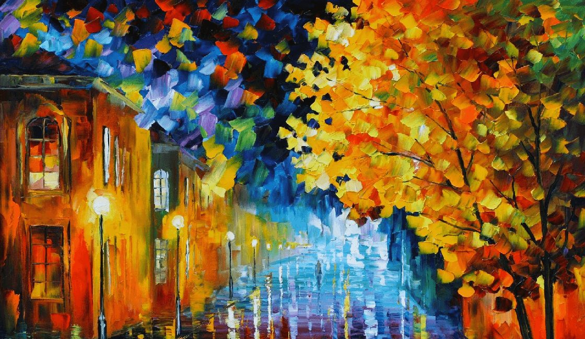
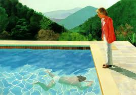

Enlaces de Interes
Pintura
la pintura es el arte de la reprecentacion grafica utilizando pigmentos
mezclados con otras sustancias aglutinantes, orgánicas o sintéticas. En este arte se emplean técnicas de pintura,
conocimientos de teoría del color y de composición pictórica, y el dibujo. La práctica del arte de pintar, consiste en aplicar,
en una superficie determinada —una hoja de papel, un lienzo, un muro, una madera, fragmento de tejido, etc.— una técnica determinada, para obtener una composición de formas, colores,
tipos de pintura La pintura acrílica, con su composición de pigmentos suspendidos en un vehículo
acrílico, se destaca por su versatilidad y rápida velocidad de secado. Es una opción popular entre los artistas
y aficionados debido a su capacidad para trabajar en una variedad de superficies, incluyendo lienzo, madera,
papel y tela, así como su durabilidad y facilidad de limpieza. Por otro lado, la pintura al óleo, una técnica
más tradicional,
utiliza pigmentos mezclados con aceites secantes como el aceite de linaza para crear una pasta maleable que se
seca lentamente
lo que permite una mezcla suave de colores y una manipulación detallada. Esta técnica es conocida por producir
obras de arte con una rica textura y profundidad de color.
La pintura al agua, o temple, es una técnica antigua que emplea pigmentos mezclados con agua y una sustancia
aglutinante como la goma arábiga o el huevo
para producir un acabado mate característico. Aunque puede sermenos duradera que otras formas pintura , es
versátil y se ha utilizado durante siglos en obras de arte religioso,
murales y decoración arquitectónica. En cuanto a la pintura de látex, esta pintura a base de agua y látex ofrece
durabilidad y resistencia a la intemperie, siendo una opción popular
para pintar interiores y exteriores de edificios. una amplia gama de colores y acabados , desde mate hasta
brillante, y es fácil de aplicar con pinceles, rodillos o pistolas pulverizadoras.
Finalmente, la pintura en aerosol, aplicada desde una lata presurizada mediante pulverización, es rápida y
conveniente para proyectos de arte callejero, graffiti y personalización de objetos.
Aunque ofrece una cobertura uniforme y rápida, requiere precaución y ventilación adecuada debido a los vapores
y aerosoles que emite durante la aplicación.
David Hockney es ampliamente reconocido por su dominio de la pintura acrílica, destacando por sus vibrantes
paisajes y retratos. Vincent van Gogh, un maestro del óleo, es famoso por su estilo expresivo y audaz, como
se ve en obras emblemáticas como "La noche estrellada". Giotto di Bondone, un pintor medieval italiano, es
conocido por su uso del temple, visible en frescos como los de la Capilla Scrovegni. Kehinde Wiley, contemporáneo,
utiliza la pintura de látex en sus retratos innovadores. Banksy, el enigmático artista callejero, emplea la pintura
en aerosol en sus provocativas obras urbanas.

es ampliamente reconocido por su dominio de la pintura acrílica, |
 | |
 |
un maestro del óleo, es famoso por su estilo expresivo y audaz, como se ve en obras emblemáticas como "La noche estrellada" |
 |
el enigmático artista callejero, emplea la pintura en aerosol en sus provocativas obras urbanas. |
 |